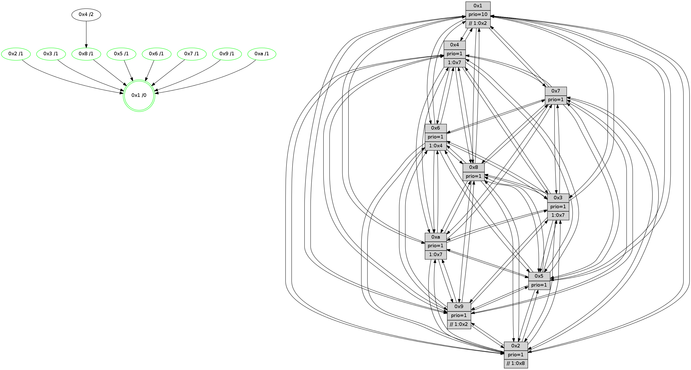

>> << IDX [start] -100 -25 -5 +0 +5 +25 +100 [915.448647022]
 Previous packets
910.001720 beacon0a(faad) #0 coord=01,02,03,04,05,06,07,0a,09,08 cycle=688.0ms assoc 64 79 74
910.011720 beacon09(faad) #0 coord=01,02,03,04,05,06,07,0a,09,08 cycle=688.0ms assoc 64 f7 a3
910.021721 beacon08(faad) #0 coord=01,02,03,04,05,06,07,0a,09,08 cycle=688.0ms assoc 64 8d ee
910.032977 [Hello(1): seq=491 sym=4,2,9,5,10,3,8,6,7 sysInfo=coloring-mode-on,ColoringModeRequestCalled stat=4:8,15,11,0/2:11,9,9,10/9:15,8,10,4/5:5,7,0,4/10:15,7,6,1/3:0,8,5,2/8:5,3,5,0/6:12,8,5,10/7:13,9,10,11]
910.035957 [Hello(3): seq=582 sym=1,7,6,2,4,8,9,10,5 sysInfo= stat=1:8,2,15,0/7:10,10,3,6/6:3,2,7,2/2:1,7,9,9/4:14,7,11,5/8:1,1,4,0/9:7,5,7,9/10:8,4,3,1/5:8,2,2,10]
910.040045 [Hello(6): seq=582 sym=2,3,5,4,7,9,8,10,1 sysInfo= stat=2:13,8,3,7/3:7,11,11,9/5:7,7,11,12/4:10,2,2,0/7:8,1,8,4/9:8,4,10,3/8:5,3,6,0/10:9,10,0,9/1:14,5,6,1]
910.043203 [Color(6) seq=214 @0:0 prio=1]
910.046634 [Color(4) seq=200 @0:0 prio=1 >10.@1,1.@2,1.@3,1.@7]
910.048550 [Hello(5): seq=582 sym=7,6,4,3,1,9,8,10,2 sysInfo=hasWarning stat=7:15,2,13,7/6:7,9,9,10/4:11,11,10,5/3:10,5,3,9/1:14,3,10,1/9:6,7,8,3/8:9,11,7,7/10:8,11,2,3/2:6,14,4,0]
910.053631 [Color(5) seq=235 @0:0 prio=1]
910.057323 [Hello(2): seq=578 sym=4,5,7,6,3,9,8,10,1 sysInfo=hasWarning stat=4:4,11,1,4/5:2,4,2,0/7:2,2,13,8/6:7,14,8,8/3:9,14,4,5/9:6,3,6,3/8:9,15,4,7/10:6,14,6,8/1:10,1,9,1]
910.060465 [Color(2) seq=227 @0:0 prio=1 >>1.@2,1.@3,1.@4]
----------------------------------------------------------------------
910.719863 beacon01(faad) #0 coord=01,02,03,04,05,06,07,0a,09,08 cycle=688.0ms assoc
-- color-indic=1 64 a4 3b
910.729846 beacon02(faad) #0 coord=01,02,03,04,05,06,07,0a,09,08 cycle=688.0ms assoc 64 37 0a
910.739847 beacon03(faad) #0 coord=01,02,03,04,05,06,07,0a,09,08 cycle=688.0ms assoc 64 4d 47
910.749846 beacon04(faad) #0 coord=01,02,03,04,05,06,07,0a,09,08 cycle=688.0ms assoc 64 3a ad
910.759847 beacon05(faad) #0 coord=01,02,03,04,05,06,07,0a,09,08 cycle=688.0ms assoc 64 40 e0
910.769846 beacon06(faad) #0 coord=01,02,03,04,05,06,07,0a,09,08 cycle=688.0ms assoc 64 ce 37
910.779845 beacon07(faad) #0 coord=01,02,03,04,05,06,07,0a,09,08 cycle=688.0ms assoc 64 b4 7a
910.789850 beacon0a(faad) #0 coord=01,02,03,04,05,06,07,0a,09,08 cycle=688.0ms assoc 64 c5 71
910.799850 beacon09(faad) #0 coord=01,02,03,04,05,06,07,0a,09,08 cycle=688.0ms assoc 64 4b a6
910.809851 beacon08(faad) #0 coord=01,02,03,04,05,06,07,0a,09,08 cycle=688.0ms assoc 64 31 eb
910.821076 [Hello(4): seq=582 sym=5,7,6,2,3,9,8,10,1 sysInfo= stat=5:13,13,9,10/7:5,7,11,5/6:10,0,7,9/2:14,10,3,8/3:5,10,5,7/9:2,15,13,6/8:0,0,0,0/10:6,5,15,8/1:6,3,9,1]
910.824256 [Color(3) seq=223 @0:0 prio=1 >1.@7]
910.826091 [Color(1) seq=263 @0:0 prio=10 >>1.@2,1.@3,1.@4]
910.827865 [Hello(10): seq=515 sym=6,2,3,8,9,5,7,4,1 sysInfo=hasWarning stat=6:13,7,10,4/2:3,1,8,3/3:12,11,3,7/8:7,2,2,0/9:9,10,10,2/5:0,3,12,11/7:2,4,8,5/4:10,5,15,6/1:13,10,11,1]
910.832111 [Hello(8): seq=526 sym=5,2,3,4,9,6,7,10,1 sysInfo=hasWarning stat=5:13,6,13,11/2:12,1,9,3/3:15,11,8,11/4:3,1,6,6/9:8,10,4,0/6:0,5,5,10/7:6,2,0,0/10:7,8,1,0/1:2,14,7,0]
910.835182 [Hello(9): seq=526 sym=2,5,3,4,7,6,8,10,1 sysInfo=hasWarning stat=2:11,8,9,1/5:13,8,5,2/3:10,1,5,11/4:1,5,2,6/7:15,3,11,8/6:11,5,13,8/8:15,6,13,1/10:0,1,0,0/1:5,9,11,1]
910.838952 [Color(9) seq=231 @0:0 prio=1 >>1.@2,1.@3,1.@4]
910.841078 [Hello(7): seq=582 sym=2,3,5,6,4,9,8,10,1 sysInfo=hasWarning stat=2:9,1,5,11/3:8,6,12,11/5:11,1,0,14/6:7,12,12,6/4:14,5,10,0/9:7,12,5,1/8:10,13,5,0/10:7,13,2,1/1:10,2,8,0]
910.845793 [Color(10) seq=203 @0:0 prio=1 >1.@7,1.@8,1.@9]
----------------------------------------------------------------------
911.507995 beacon01(faad) #0 coord=01,02,03,04,05,06,07,0a,09,08 cycle=688.0ms assoc
-- color-indic=1 64 60 35
911.517978 beacon02(faad) #0 coord=01,02,03,04,05,06,07,0a,09,08 cycle=688.0ms assoc 64 f3 04
911.527979 beacon03(faad) #0 coord=01,02,03,04,05,06,07,0a,09,08 cycle=688.0ms assoc 64 89 49
911.537977 beacon04(faad) #0 coord=01,02,03,04,05,06,07,0a,09,08 cycle=688.0ms assoc 64 fe a3
911.547977 beacon05(faad) #0 coord=01,02,03,04,05,06,07,0a,09,08 cycle=688.0ms assoc 64 84 ee
911.557979 beacon06(faad) #0 coord=01,02,03,04,05,06,07,0a,09,08 cycle=688.0ms assoc 64 0a 39
911.567978 beacon07(faad) #0 coord=01,02,03,04,05,06,07,0a,09,08 cycle=688.0ms assoc 64 70 74
911.577984 beacon0a(faad) #0 coord=01,02,03,04,05,06,07,0a,09,08 cycle=688.0ms assoc 64 01 7f
911.587983 beacon09(faad) #0 coord=01,02,03,04,05,06,07,0a,09,08 cycle=688.0ms assoc 64 8f a8
911.597983 beacon08(faad) #0 coord=01,02,03,04,05,06,07,0a,09,08 cycle=688.0ms assoc 64 f5 e5
911.610192 [Hello(1): seq=492 sym=4,2,9,5,10,3,8,6,7 sysInfo=coloring-mode-on,ColoringModeRequestCalled stat=4:9,0,11,0/2:12,10,9,10/9:0,9,10,4/5:6,8,0,4/10:0,8,6,1/3:1,8,5,2/8:6,3,5,0/6:13,9,5,10/7:14,9,10,11]
911.613057 [Hello(5): seq=583 sym=7,6,4,3,1,9,8,10,2 sysInfo=hasWarning stat=7:0,2,13,7/6:7,9,9,10/4:12,11,10,5/3:11,6,3,9/1:15,4,10,1/9:7,8,8,3/8:10,11,7,7/10:9,12,2,3/2:7,15,4,0]
911.615547 [Hello(2): seq=579 sym=4,5,7,6,3,9,8,10,1 sysInfo=hasWarning stat=4:5,11,1,4/5:2,4,2,0/7:3,2,13,8/6:7,14,8,8/3:10,15,4,5/9:7,4,6,3/8:10,15,4,7/10:7,15,6,8/1:11,2,9,1]
911.618248 [Color(5) seq=236 @0:0 prio=1]
911.620673 [Hello(6): seq=583 sym=2,3,5,4,7,9,8,10,1 sysInfo= stat=2:14,9,3,7/3:7,12,11,9/5:8,8,11,12/4:11,3,2,0/7:9,1,8,4/9:9,5,10,3/8:6,3,6,0/10:10,11,0,9/1:15,6,6,1]
911.624459 [STC(1) #0.116 tree-change,inconsistent-stability,stable,to-color d=0]
911.627206 [Hello(3): seq=583 sym=1,7,6,2,4,8,9,10,5 sysInfo= stat=1:8,3,15,0/7:11,10,3,6/6:4,3,7,2/2:2,8,9,9/4:15,8,11,5/8:2,1,4,0/9:8,6,7,9/10:9,5,3,1/5:9,3,2,10]
911.631107 [Color(2) seq=228 @0:0 prio=1 >>1.@2,1.@3,1.@4]
911.633814 [Color(6) seq=215 @0:0 prio=1]
911.636801 [Color(4) seq=201 @0:0 prio=1 >1.@7]
----------------------------------------------------------------------
912.296126 beacon01(faad) #0 coord=01,02,03,04,05,06,07,0a,09,08 cycle=688.0ms assoc
-- color-indic=1 64 dc 30
912.306109 beacon02(faad) #0 coord=01,02,03,04,05,06,07,0a,09,08 cycle=688.0ms assoc 64 4f 01
912.316108 beacon03(faad) #0 coord=01,02,03,04,05,06,07,0a,09,08 cycle=688.0ms assoc 64 35 4c
912.326107 beacon04(faad) #0 coord=01,02,03,04,05,06,07,0a,09,08 cycle=688.0ms assoc 64 42 a6
912.336111 beacon05(faad) #0 coord=01,02,03,04,05,06,07,0a,09,08 cycle=688.0ms assoc 64 38 eb
912.346110 beacon06(faad) #0 coord=01,02,03,04,05,06,07,0a,09,08 cycle=688.0ms assoc 64 b6 3c
912.356110 beacon07(faad) #0 coord=01,02,03,04,05,06,07,0a,09,08 cycle=688.0ms assoc 64 cc 71
912.366115 beacon0a(faad) #0 coord=01,02,03,04,05,06,07,0a,09,08 cycle=688.0ms assoc 64 bd 7a
912.376114 beacon09(faad) #0 coord=01,02,03,04,05,06,07,0a,09,08 cycle=688.0ms assoc 64 33 ad
912.386114 beacon08(faad) #0 coord=01,02,03,04,05,06,07,0a,09,08 cycle=688.0ms assoc 64 49 e0
912.397404 [STC(5)->1 #0.116 tree-change,inconsistent-stability,stable,to-color d=1]
912.399580 [Hello(4): seq=583 sym=5,7,6,2,3,9,8,10,1 sysInfo= stat=5:13,13,9,10/7:6,7,11,5/6:10,0,7,9/2:14,10,3,8/3:5,11,5,7/9:3,0,13,6/8:1,0,0,0/10:7,6,15,8/1:7,4,9,1]
912.402944 [Color(3) seq=224 @0:0 prio=1 >1.@7]
912.404563 [Hello(7): seq=583 sym=2,3,5,6,4,9,8,10,1 sysInfo=hasWarning stat=2:10,2,5,11/3:9,6,12,11/5:12,2,0,14/6:8,13,12,6/4:14,6,10,0/9:7,12,5,1/8:10,13,5,0/10:7,14,2,1/1:11,2,9,0]
912.407124 [Hello(8): seq=527 sym=5,2,3,4,9,6,7,10,1 sysInfo=hasWarning stat=5:14,7,13,11/2:13,2,9,3/3:0,11,8,11/4:3,2,6,6/9:9,11,4,0/6:1,6,5,10/7:7,2,0,0/10:7,9,1,0/1:3,14,8,0]
912.411882 [STC(8)->1 #0.116 tree-change,inconsistent-stability,stable,to-color d=1]
912.413271 [STC(7)->1 #0.116 tree-change,inconsistent-stability,stable,to-color d=1]
912.415765 [TreeStatus(8)-.->1 #0.116 tree-change,inconsistent-stability,stable child=1]
912.417128 [TreeStatus(7)-.->1 #0.116 tree-change,inconsistent-stability,stable child=1]
912.418384 [Color(1) seq=264 @0:0 prio=10 >>1.@2,1.@3,1.@4]
912.422542 [Hello(10): seq=516 sym=6,2,3,8,9,5,7,4,1 sysInfo=hasWarning stat=6:14,8,10,4/2:4,2,8,3/3:13,12,3,7/8:7,2,2,0/9:9,10,10,2/5:1,4,12,11/7:2,4,8,5/4:11,6,15,6/1:14,10,12,1]
912.425685 [STC(10)->1 #0.116 tree-change,inconsistent-stability,stable,to-color d=1]
912.427627 [Color(10) seq=204 @0:0 prio=1 >1.@7,1.@8,1.@9]
912.430354 [Hello(9): seq=527 sym=2,5,3,4,7,6,8,10,1 sysInfo=hasWarning stat=2:12,9,9,1/5:14,9,5,2/3:11,2,5,11/4:2,6,2,6/7:0,3,11,8/6:12,6,13,8/8:15,6,13,1/10:0,2,0,0/1:6,9,12,1]
912.434462 [STC(9)->1 #0.116 tree-change,inconsistent-stability,stable,to-color d=1]
912.436085 [Color(9) seq=232 @0:0 prio=1 >>1.@2,1.@3,1.@4]
----------------------------------------------------------------------
913.084257 beacon01(faad) #0 coord=01,02,03,04,05,06,07,0a,09,08 cycle=688.0ms assoc
-- color-indic=1 64 08 05
913.094240 beacon02(faad) #0 coord=01,02,03,04,05,06,07,0a,09,08 cycle=688.0ms assoc 64 9b 34
913.104239 beacon03(faad) #0 coord=01,02,03,04,05,06,07,0a,09,08 cycle=688.0ms assoc 64 e1 79
913.114240 beacon04(faad) #0 coord=01,02,03,04,05,06,07,0a,09,08 cycle=688.0ms assoc 64 96 93
913.124241 beacon05(faad) #0 coord=01,02,03,04,05,06,07,0a,09,08 cycle=688.0ms assoc 64 ec de
913.134241 beacon06(faad) #0 coord=01,02,03,04,05,06,07,0a,09,08 cycle=688.0ms assoc 64 62 09
913.144241 beacon07(faad) #0 coord=01,02,03,04,05,06,07,0a,09,08 cycle=688.0ms assoc 64 18 44
913.154245 beacon0a(faad) #0 coord=01,02,03,04,05,06,07,0a,09,08 cycle=688.0ms assoc 64 69 4f
913.164245 beacon09(faad) #0 coord=01,02,03,04,05,06,07,0a,09,08 cycle=688.0ms assoc 64 e7 98
913.174246 beacon08(faad) #0 coord=01,02,03,04,05,06,07,0a,09,08 cycle=688.0ms assoc 64 9d d5
913.186468 [Hello(1): seq=493 sym=4,2,9,5,10,3,8,6,7 sysInfo=coloring-mode-on,ColoringModeRequestCalled stat=4:10,1,11,0/2:12,11,9,10/9:1,10,11,4/5:6,8,1,4/10:1,9,7,1/3:2,8,5,2/8:6,3,5,0/6:13,10,5,10/7:14,9,10,11]
913.189791 [Hello(5): seq=584 sym=7,6,4,3,1,9,8,10,2 sysInfo=hasWarning stat=7:1,2,14,8/6:8,10,9,10/4:13,12,10,5/3:12,7,3,9/1:0,5,11,1/9:8,9,9,3/8:11,11,8,8/10:10,13,3,3/2:7,0,4,0]
913.192631 [Color(5) seq=237 @0:0 prio=1]
913.194267 [Hello(2): seq=580 sym=4,5,7,6,3,9,8,10,1 sysInfo=hasWarning stat=4:6,12,1,4/5:2,4,3,0/7:4,2,14,9/6:7,15,8,8/3:10,0,4,5/9:8,5,7,3/8:11,15,5,8/10:8,0,7,8/1:12,3,9,1]
913.196742 [Hello(3): seq=584 sym=1,7,6,2,4,8,9,10,5 sysInfo= stat=1:8,4,15,0/7:12,10,4,7/6:4,4,7,2/2:2,9,9,9/4:0,9,11,5/8:3,1,5,1/9:9,7,8,9/10:10,6,4,1/5:9,3,3,10]
913.199781 [STC(4)->8-.->1 #0.116 tree-change,inconsistent-stability,to-color d=2]
913.202153 [Color(2) seq=229 @0:0 prio=1 >>1.@2,1.@3,1.@4]
913.212772 [Hello(6): seq=584 sym=2,3,5,4,7,9,8,10,1 sysInfo= stat=2:14,9,3,7/3:7,13,11,9/5:8,8,12,12/4:12,4,2,0/7:10,1,9,5/9:10,6,11,3/8:7,3,7,1/10:11,12,1,9/1:0,7,6,1]
913.217194 [Color(6) seq=216 @0:0 prio=1]
----------------------------------------------------------------------
913.872387 beacon01(faad) #0 coord=01,02,03,04,05,06,07,0a,09,08 cycle=688.0ms assoc
-- color-indic=1 64 b4 00
913.882369 beacon02(faad) #0 coord=01,02,03,04,05,06,07,0a,09,08 cycle=688.0ms assoc 64 27 31
913.892370 beacon03(faad) #0 coord=01,02,03,04,05,06,07,0a,09,08 cycle=688.0ms assoc 64 5d 7c
913.902370 beacon04(faad) #0 coord=01,02,03,04,05,06,07,0a,09,08 cycle=688.0ms assoc 64 2a 96
913.912370 beacon05(faad) #0 coord=01,02,03,04,05,06,07,0a,09,08 cycle=688.0ms assoc 64 50 db
913.922369 beacon06(faad) #0 coord=01,02,03,04,05,06,07,0a,09,08 cycle=688.0ms assoc 64 de 0c
913.932371 beacon07(faad) #0 coord=01,02,03,04,05,06,07,0a,09,08 cycle=688.0ms assoc 64 a4 41
913.942375 beacon0a(faad) #0 coord=01,02,03,04,05,06,07,0a,09,08 cycle=688.0ms assoc 64 d5 4a
913.952374 beacon09(faad) #0 coord=01,02,03,04,05,06,07,0a,09,08 cycle=688.0ms assoc 64 5b 9d
913.962375 beacon08(faad) #0 coord=01,02,03,04,05,06,07,0a,09,08 cycle=688.0ms assoc 64 21 d0
913.974818 [Hello(4): seq=584 sym=5,7,6,2,3,9,8,10,1 sysInfo= stat=5:13,13,9,10/7:7,7,12,6/6:11,1,7,9/2:14,11,3,8/3:5,12,5,7/9:4,1,14,6/8:2,0,1,1/10:8,7,0,8/1:7,5,9,1]
913.978506 [Hello(7): seq=584 sym=2,3,5,6,4,9,8,10,1 sysInfo=hasWarning stat=2:11,3,5,11/3:10,6,12,11/5:13,3,1,14/6:9,14,12,6/4:14,6,11,0/9:8,13,6,1/8:10,13,5,0/10:8,15,3,1/1:12,3,9,0]
913.981512 [Hello(8): seq=528 sym=5,2,3,4,9,6,7,10,1 sysInfo=hasWarning stat=5:15,8,14,11/2:14,3,9,3/3:1,11,8,11/4:3,2,7,6/9:10,12,5,0/6:2,7,5,10/7:7,2,0,1/10:8,10,2,0/1:4,15,8,0]
913.984578 [Color(9) seq=233 @0:0 prio=1 >>1.@2,1.@3,1.@4]
913.986593 [Color(8) seq=229 @0:0 prio=1]
913.989397 [Color(7) seq=179 @0:0 prio=1]
913.992337 [Hello(10): seq=517 sym=6,2,3,8,9,5,7,4,1 sysInfo=hasWarning stat=6:15,9,10,4/2:5,3,8,3/3:14,12,3,7/8:7,2,2,0/9:10,11,11,2/5:2,5,13,11/7:2,4,8,5/4:12,6,0,6/1:15,10,12,1]
913.995216 [Color(1) seq=265 @0:0 prio=10 >>1.@2,1.@3,1.@4]
913.999471 [Color(10) seq=205 @0:0 prio=1 >1.@7,1.@8,1.@9]
----------------------------------------------------------------------
914.660517 beacon01(faad) #0 coord=01,02,03,04,05,06,07,0a,09,08 cycle=688.0ms assoc
-- color-indic=1 64 70 0e
914.670499 beacon02(faad) #0 coord=01,02,03,04,05,06,07,0a,09,08 cycle=688.0ms assoc 64 e3 3f
914.680499 beacon03(faad) #0 coord=01,02,03,04,05,06,07,0a,09,08 cycle=688.0ms assoc 64 99 72
914.690500 beacon04(faad) #0 coord=01,02,03,04,05,06,07,0a,09,08 cycle=688.0ms assoc 64 ee 98
914.700499 beacon05(faad) #0 coord=01,02,03,04,05,06,07,0a,09,08 cycle=688.0ms assoc 64 94 d5
914.710499 beacon06(faad) #0 coord=01,02,03,04,05,06,07,0a,09,08 cycle=688.0ms assoc 64 1a 02
914.720501 beacon07(faad) #0 coord=01,02,03,04,05,06,07,0a,09,08 cycle=688.0ms assoc 64 60 4f
914.730505 beacon0a(faad) #0 coord=01,02,03,04,05,06,07,0a,09,08 cycle=688.0ms assoc 64 11 44
914.740505 beacon09(faad) #0 coord=01,02,03,04,05,06,07,0a,09,08 cycle=688.0ms assoc 64 9f 93
914.750506 beacon08(faad) #0 coord=01,02,03,04,05,06,07,0a,09,08 cycle=688.0ms assoc 64 e5 de
914.763015 [Hello(3): seq=585 sym=1,7,6,2,4,8,9,10,5 sysInfo= stat=1:8,5,15,0/7:12,10,4,7/6:5,5,7,2/2:2,10,9,9/4:1,9,12,5/8:3,1,5,1/9:9,7,8,9/10:10,7,4,1/5:9,3,3,10]
914.766092 [Hello(5): seq=585 sym=7,6,4,3,1,9,8,10,2 sysInfo=hasWarning stat=7:1,3,14,8/6:9,11,9,10/4:14,12,11,5/3:13,7,3,9/1:1,6,11,1/9:9,10,9,3/8:12,12,8,8/10:11,14,3,3/2:8,1,4,0]
914.769217 [Color(5) seq=238 @0:0 prio=1]
914.771302 [Hello(6): seq=585 sym=2,3,5,4,7,9,8,10,1 sysInfo= stat=2:14,9,3,7/3:7,13,11,9/5:8,8,12,12/4:13,4,2,0/7:11,2,9,5/9:10,7,11,3/8:8,4,7,1/10:12,13,1,9/1:1,8,6,1]
914.773782 [Hello(2): seq=581 sym=4,5,7,6,3,9,8,10,1 sysInfo=hasWarning stat=4:7,12,1,4/5:2,4,3,0/7:5,3,14,9/6:8,0,8,8/3:11,0,4,5/9:8,6,7,3/8:12,0,5,8/10:9,1,7,8/1:13,4,9,1]
914.776510 [Color(6) seq=217 @0:0 prio=1 >1.@4,1.@7,1.@8,1.@9]
914.780601 [Color(2) seq=230 @0:0 prio=1 >>1.@8,1.@9]
914.782145 [Hello(1): seq=494 sym=4,2,9,5,10,3,8,6,7 sysInfo=coloring-mode-on,ColoringModeRequestCalled stat=4:11,1,12,0/2:13,12,9,10/9:1,10,11,4/5:7,9,1,4/10:1,10,7,1/3:3,8,5,2/8:6,3,5,0/6:14,11,5,10/7:14,9,10,11]